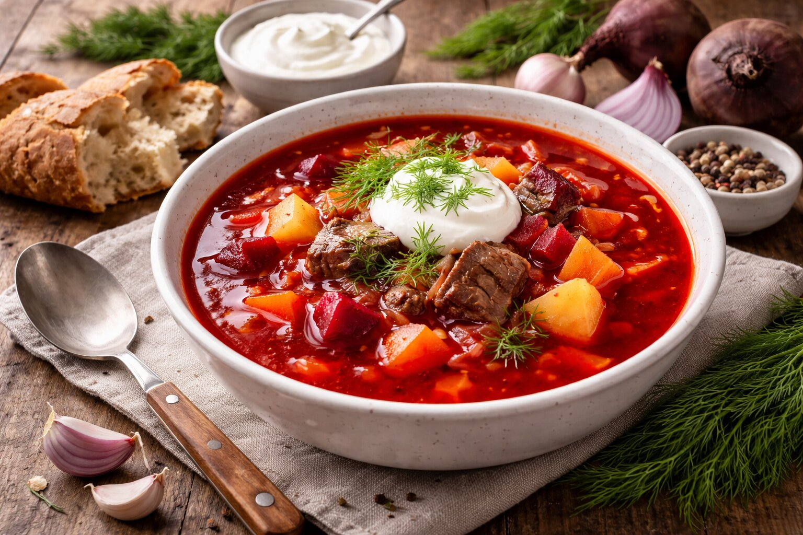

Suroviny
- 400 g hovädzieho predného mäsa
- 200 g červenej repy
- 300 g bielej kapusty
- 250 g zemiakov
- 2 ks mrkvy
- 1 ks petržlenu
- 1 ks cibule
- 2 strúčiky cesnaku
- 50 g rajčinového pretlaku
- 30 g masla
- Ocot podľa chuti
- Kyslá hustá smotana na podávanie
Postup
- Mäso očistíme, umyjeme, jemne naklepeme a vložíme do hrnca.
- Zalejeme 1,5 l vody, prikryjeme a na miernom ohni varíme do mäkka (cca 1 – 1,5 hodiny).
- Mäso vyberieme a vývar precedíme.
- Kapustu nakrájame na hrubšie kúsky, koreňovú zeleninu a cibuľu na pásiky, zemiaky na kocky.
- Na panvici rozohrejeme maslo, pridáme nakrájanú zeleninu a krátko osmažíme.
- Zeleninu vložíme do vývaru, pridáme uvarenú červenú repu nakrájanú na kocky, rajčinový pretlak, soľ, čierne korenie a 1 lyžičku octu.
- Varíme približne 20 minút.
- Na záver pridáme podrvený cesnak, nakrájané mäso a nasekaný petržlen.
- Podávame s kyslou smotanou.